AIF : 전칠삼추출물 등 복합물 [개별인정원료]
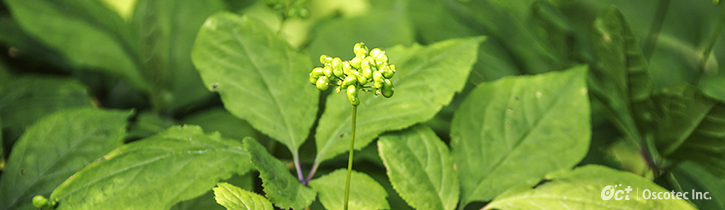
관절은 우리가 일상생활을 건강하게 영위하는데 있어서 가장 중요한 신체기관의 하나입니다.
관절건강을 위해서는 무리한 힘이 관절에 가지 않도록 평소에 주의를 기울임과 동시에 걷기, 수영 등 적절한 운동을 병행하여 관절주변의 근육을 키우는 것이 중요합니다.
관절건강의 메커니즘
관절은 뼈와 뼈를 연결하는 부위로서, 딱딱한 뼈가 서로 부딪히지 않도록 해주는 끈적한 액체(활액)가 뼈 사이에 채워져 있고, 뼈의 말단부위에는 탄력을 지닌 연골이 존재하여 이들이 쿠션 역할을 합니다. 관절에 염증이 발생하면 붓는 현상과 함께 통증을 수반하게 되며, 증상이 악화됨에 따라 연골의 파괴가 진행되어 점차적으로 관절의 기능이 약화되면서 최종적으로는 운동능력의 상실을 초래합니다.
AIF 시리즈 제품
AIF :
관절건강에 도움을 줄 수 있는 개별인정원료 전칠삼추출물 등 복합물 [제2010-47호]AIF-J :
해외수출용(일본)AIF란?
오스코텍이 개발한 AIF는 관절건강 유지에 도움을 줄 수 있는 개별인정형 원료(식품의약품안전청 승인 2010-47호)입니다. AIF는 국내외에서 예로부터 식용으로 사용되어 온 천연물(식물)에 포함된 성분을 오스코텍이 독자적으로 개발한 건강기능 식품소재이며, 다양한 효능시험, 안전성 시험 및 인체적용시험을 통하여 안전성과 효능이 입증된 바 있습니다.
특허현황
| Product | Country | Registration No. | Status | Content |
|---|---|---|---|---|
| AIF | Korea | 10-2005-05425 | 등록완료 | 삼칠근, 숙지황, 오가피의 혼합 생약재추출물 및 이를 유효성분으로 하는 관절염 예방 및 치료용 조성물 |
제품정보
| 제품의 요건 | 기능성 내용 | 관절건강에 도움을 줄 수 있음(기타기능II) |
|---|---|---|
| 일일 섭취량 | 전칠삼추출물 등 복합물로서 800mg/일 | |
| 성상 | 갈색분말 | |
| 포장단위 | 5kg 폴리에틸렌(내면) 알루미늄 파우치 | |
| 담당자 연락처 | 031 - 628 - 7642 |
|---|---|
| (주)오스코텍 기능소재팀 | jhyoo@oscotec.com |
OPB : 가시오가피숙지황 복합추출물 / 개별인정원료 [제2013-14호]
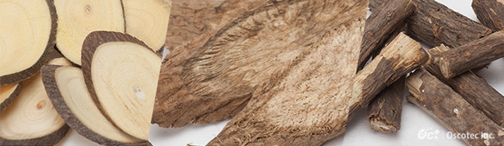
뼈는 살아있는 조직으로서 우리가 태어났을 때부터 끊임없이 신진대사를 반복하면서 항상 새로워지고 있으며, 이를 통해 골밀도가 안전하게 유지됩니다. 골밀도가 일정수준 이하로 감소되면 외부의 작은 충격에도 쉽게 골절이 발생할 수 있습니다.
뼈건강을 유지하기 위해서는 평소에 균형잡힌 식생활을 통하여 칼슘, 마그네슘, 비타민D 등을 충분히 섭취함과 동시에, 꾸준한 운동으로 근육을 키우고 뼈에 적당한 부하를 주는 것이 도움이 됩니다.
뼈건강의 메커니즘
뼈의 건강을 유지하는데 필요한 재료가 칼슘이라면, 이 재료를 이용하는 메커니즘이 바로 뼈의 신진대사(리모델링)입니다. 뼈를 흡수하는 세포(파골세포)가 오래된 뼈를 흡수하고 그 자리에 새로운 뼈를 만드는 세포(조골세포)가 칼슘을 유착시킵니다. 이와 같은 신진대사가 적절한 균형을 유지할 때 보다 튼튼한 뼈조직을 유지할 수 있습니다.
OPB 시리즈 제품
OPB :
뼈건강에 도움을 줄 수 있는 개별인정원료 가시오가피숙지황복합추출물 [제2013-14호]OPB-K :
해외의 식품규격기준에 적합하도록 Formula를 조정하여 개발된 건강기능 식품소재OPB란?
뼈 건강유지에 도움을 줄 수 있는 건강기능 식품소재입니다. OPB는 우리나라에서 예로부터 사용되어 온 천연물(식물)에 포함된 성분을 오스코텍에 독자적으로 개발한 건강기능 식품소재입니다.
주요성분
가시오가피숙지황복합추출물(OPB)
뼈 건강에 도움을 줄 수 있음(OPB는 개별인정형 원료 '가시오가피숙지황복합추출물'의 등록 상표입니다.)뼈 건강 생리활성기능성 성분 OPB
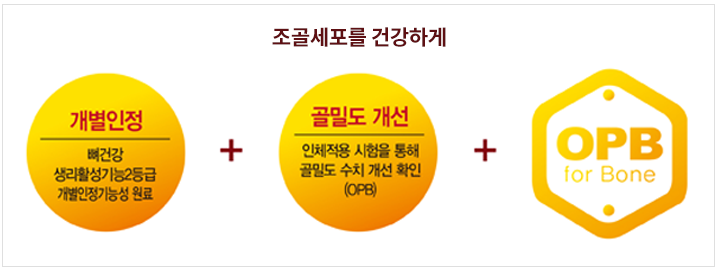이런분께 권해드립니다.
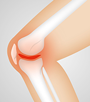- 폐경기 / 갱년기 주부
- 잦은 다이어트로 영양 불균형이 걱정되는 여성
- 한창 자라나야 할 청소년
- 출산 후 뼈 건강에 신경써야 할 분
- 과중한 업무, 운동 부족으로 뼈 건강이 걱정되는 아빠
- 골다공증 발생 위험 감소에 도움을 받고 싶은 분
- 유전적 소인으로 뼈 건강이 걱정되는 분
특허취득
| Product | Country | Registration No. | Status | Content |
|---|---|---|---|---|
| OPB | Korea | 10-2005-15049 | 등록완료 | 숙지황과 오가피의 혼합 생약재 추출물 및 이를 유효성분으로 하는 골다공증 예방 및 치료용 조성물 |
제품정보
| 제품의 요건 | 기능성 내용 | 뼈건강에 도움을 줄 수 있음(생리활성기능 2등) |
|---|---|---|
| 일일 섭취량 | 가시오가피숙지황 복합추출물로서 800mg/일 | |
| 성상 | 갈색분말 | |
| 포장단위 | 5kg 폴리에틸렌(내면) 알루미늄 파우치 | |
건강정보
조골세포가 뼈 생성을 제대로 못하면, 골밀도 감소 및 골절 위험 등 치명적 위협!
뼈 조직은 조골세포와, 골세포, 파골세포로 이루어져 있으며 조골세포는 뼈 구성 성분을 합성하여 뼈를 생성하는 역할을 하며, 파골세포는 뼈를 파괴하는 역할을 합니다. 뼈 흡수와 뼈 생성은 평생 동안 계속되는데 골대사 불균형으로 골흡수가 골 생성보다 많아지면 골밀도가 감소하고 뼈의 강도가 약해져서 골절의 위험이 증가하는 등 뼈 건강에 치명적인 위협을 받게 됩니다. 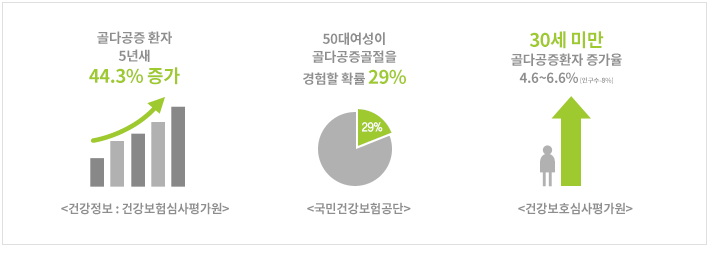- 여성이 남성보다 13.1배 많아 (국민건강보험공단)
- 건강 100세, 뼈에 달렸다 (조선일보 2014.01.08)
- 우리나라 20대 뼈 건강 '적신호' (KBS뉴스 2012.07.06)
- 뼈 건강 미리미리 저축하세요 (의약뉴스 2012.06.01)
- 60대 이상이 전체 환자수의 72.2% 차지 (국민건강보험공단)
- 건강한 노후, 폐경 여성 뼈 지켜야 행복한 인생 황금기 누린다 (서울경제 2012.08.23)
- 부모님의 뼈 건강, 안녕하신가요? (국민일보 2009.09.30)
- 뼈 건강, 인생에서 중요한 세 번의 시기? 청장년기, 출산 직후, 폐경기/갱년기
뼈 건강, 인생에서 중요한 세 번의 시기? 청장년기, 출산 직후, 폐경기/갱년기
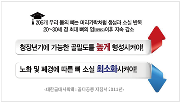
골다공증 진단(뼈 건강) 체크리스트
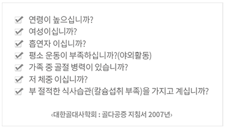뼈의 구조 (골밀도가 감소된 뼈)
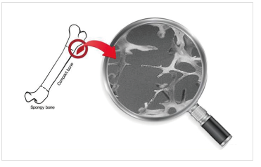골다공증성 골절이 잘 발생되는 부위
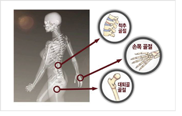뼈의 기능과 모습
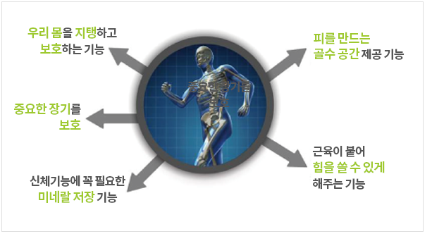골다공증, 왜? 누구한테 잘 걸리나요?
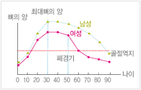| 담당자 연락처 | 031 - 628 - 7642 |
|---|---|
| (주)오스코텍 기능소재팀 | jhyoo@oscotec.com |